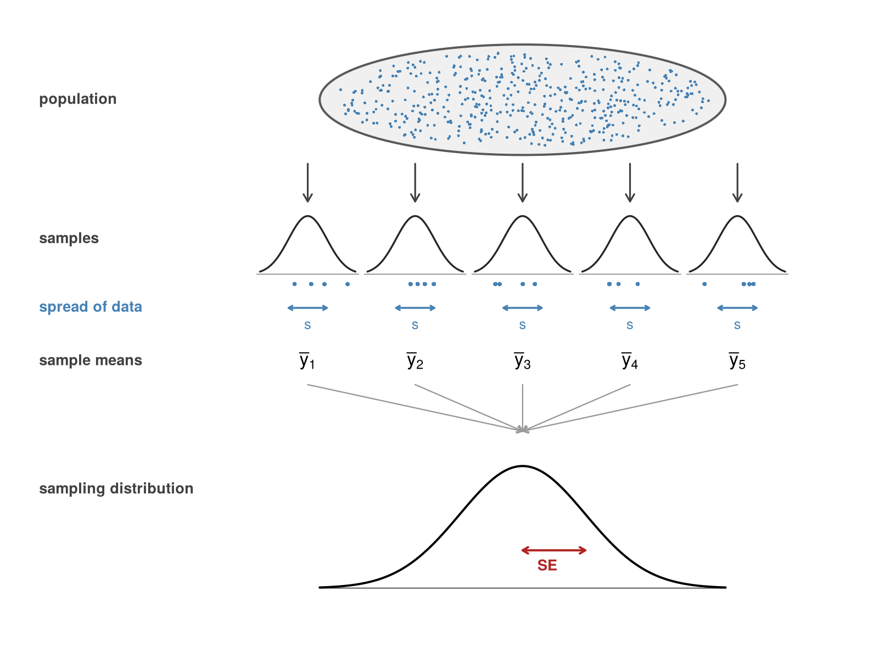

Code
set.seed(256)
sd_s <- 0.32 # spread of the individual observations within a sample
n_ind <- 4 # observations drawn per sample
bell <- function(x0, sdv, base, height, col = "grey15", lwd = 1.7) {
xx <- seq(x0 - 2.5 * sdv, x0 + 2.5 * sdv, length.out = 250)
yy <- base + height * exp(-0.5 * ((xx - x0) / sdv)^2)
lines(xx, yy, lwd = lwd, col = col)
}
op <- par(mar = c(0, 0, 0, 0))
plot(NA, xlim = c(-3.2, 10.7), ylim = c(0.2, 10.6),
axes = FALSE, xlab = "", ylab = "")
## the population
th <- seq(0, 2 * pi, length.out = 200)
polygon(5 + 3.4 * cos(th), 9.3 + 0.95 * sin(th),
col = "grey94", border = "grey35", lwd = 2)
u <- runif(600, -1, 1); v <- runif(600, -1, 1)
keep <- u^2 + v^2 < 1
points(5 + 3.15 * u[keep], 9.3 + 0.82 * v[keep],
pch = 16, cex = 0.35, col = "steelblue")
text(-3.1, 9.3, "population", adj = 0, font = 2, cex = 0.85, col = "grey25")
## five samples, each with its own distribution
xs <- c(1.4, 3.2, 5.0, 6.8, 8.6)
arrows(xs, 8.2, xs, 7.55, length = 0.08, lwd = 1.6, col = "grey25")
for (j in seq_along(xs)) {
segments(xs[j] - 0.85, 6.3, xs[j] + 0.85, 6.3, col = "grey60")
bell(xs[j], sd_s, base = 6.3, height = 1.0)
points(xs[j] + rnorm(n_ind, 0, sd_s), rep(6.13, n_ind),
pch = 16, cex = 0.55, col = "steelblue")
arrows(xs[j] - sd_s, 5.72, xs[j] + sd_s, 5.72, code = 3,
length = 0.04, lwd = 1.8, col = "steelblue")
text(xs[j], 5.42, "s", col = "steelblue", cex = 0.8)
text(xs[j], 4.8, bquote(bar(y)[.(j)]), cex = 1.05)
}
text(-3.1, 6.9, "samples", adj = 0, font = 2, cex = 0.85, col = "grey25")
text(-3.1, 5.72, "spread of data", adj = 0, font = 2, cex = 0.85, col = "steelblue")
text(-3.1, 4.8, "sample means", adj = 0, font = 2, cex = 0.85, col = "grey25")
## the sampling distribution they trace out
arrows(xs, 4.4, 5, 3.6, length = 0.06, lwd = 1.2, col = "grey60")
gx <- seq(1.6, 8.4, length.out = 300)
gy <- 0.9 + 2.1 * exp(-0.5 * ((gx - 5) / 1.05)^2)
segments(1.6, 0.9, 8.4, 0.9, col = "grey35")
lines(gx, gy, lwd = 2)
text(-3.1, 2.6, "sampling distribution", adj = 0, font = 2, cex = 0.85, col = "grey25")
## the standard error is its spread
arrows(5, 1.55, 6.05, 1.55, code = 3, length = 0.06,
lwd = 2, col = "firebrick")
text(5.25, 1.3, "SE", adj = 0, font = 2, cex = 0.85, col = "firebrick")
par(op)